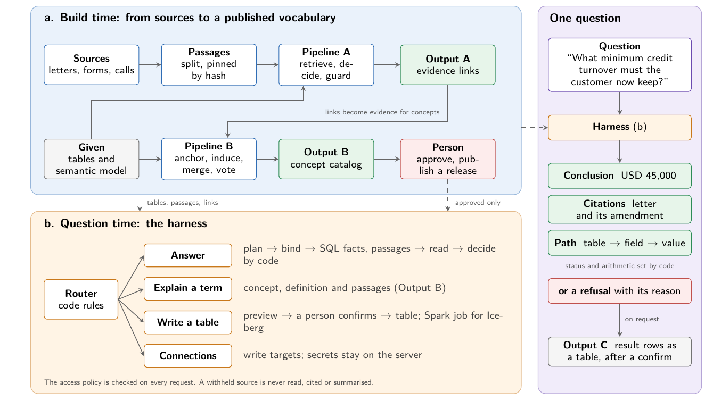

Semantic Workspace¶
The Semantic Workspace maps unstructured sources onto a semantic layer that is given and never edited. The sources are documents, fill-in forms and recorded calls. The results are evidence links and an anchored concept catalog. The workspace can also write table rows as a system feature, which the paper does not cover. A question-answering workspace reads those results and cites the passages behind each answer.
This site describes the design and the details. It is written from the working paper and from the code. It holds no lab exercises.

Figure 1 of the paper. (a) At build time, Pipeline A links passages to the given semantic model (Output A). Pipeline B groups that evidence into concepts (Output B). A person approves and publishes a release. (b) At question time, a rules-first router sends each request to one of four fixed tools; a model helps only with a request to act that the rules do not complete.
Why it exists¶
Structured data has a semantic layer. The layer names each field and metric, defines it and declares how tables join. Contracts, forms and recorded calls have no such layer. The limits, dates and commitments they hold cannot be joined to the tables or governed with them.
The paper frames this gap as a mapping task. For each passage, decide which definitions it states a value of or is about, or abstain. Then group that evidence into business concepts linked to the layer. The layer is the target. The system never edits it.
The rule¶
One rule runs through the design: the model chooses, code decides.
- A small language model picks among retrieved definitions.
- Deterministic guards check the stated value, settle the relation and attach entity keys.
- Concepts of the layer collect their evidence by aggregation, with no model call.
- Only passages the layer cannot explain reach an induction model.
- At question time, code computes every number. The model writes a plan and reads clause values.
Headline results and limits¶
The paper reports these results. The scope of each is part of the claim.
| Result | Value | Scope |
|---|---|---|
| Link precision, model decision step | 0.70 | Held-out gold set A2, run once, 82 anchors |
| Link precision, thresholds and rules | 0.29 | Same set |
| Precision on unseen packs, two-step | 0.73 (finance), 0.90 (manufacturing) | Generator-made synthetic packs, run once |
| False-link rate on unseen packs, two-step | 0.03 (finance), 0.01 (manufacturing) | Same packs |
| Question answering, unseen exams | 11, 14, 18 and 17 of 30 | Four exams; none meets the pass bar |
Limits stated by the paper
Recall on commitments is the main limit. The evaluation sets are small, and one AI annotator wrote each set. The sets cover two demo datasets. The question-answering path does not meet its pass bar on any unseen exam. The paper does not claim state-of-the-art results.
See Evaluation for every table and its scope.
Reading guide¶
Read in this order for the design.
- Concepts: the task, the terms and a glossary.
- Architecture: build time, question time, components and data stores.
- Ingestion: how each file type becomes passages.
- Pipeline A: passages to evidence links.
- Pipeline B: evidence links to a concept catalog.
- Review and release: human decisions and what reaches answers.
Read these for use and operation.
- Ask: the question path, the router, refusals and citations.
- Table rows: table rows from forms, printed reports, calls and documents, and the two write paths.
- Access and masking: accounts, withheld sources and identifier masking.
- Localization: the English and Chinese language switch.
- Deployment: the AMP on Cloudera AI.
- Data: the two sample datasets and their licences.
The paper¶
Mapping Unstructured Documents onto a Governed Semantic Layer: Evidence Links and an Anchored Concept Catalog.
Working draft, 23 November 2026, not reviewed.
The PDF is in the repository at
docs/paper/main.pdf.
Two datasets¶
The workspace ships with two demo datasets.
| Dataset | Structured data | Unstructured sources |
|---|---|---|
| Financial Services | A mock-up banking workbook, 11 tables, three days of transactions | Synthetic banking documents, fill-in forms, one recorded call |
| Manufacturing | AdventureWorks sample data, 25 tables | Synthetic contracts and AdventureWorks sample documents |
The finance model has 143 definitions. The manufacturing model has 240 definitions. See Data for what is synthetic, what is public and the attribution.
Terms used on this site¶
- Cloudera AI hosts the application and its jobs as an AMP.
- Cloudera Lakehouse Engine (Trino) is the direct write path for table rows to Iceberg.
- Semantic Hub is the target of the release export. A release is an Ossie file that passes the Semantic Hub schema check and lint.